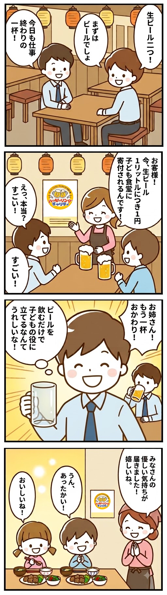
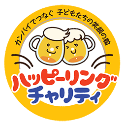
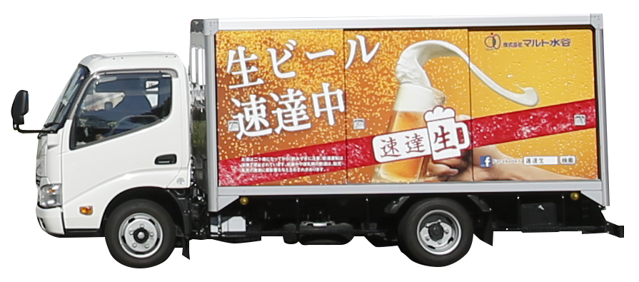
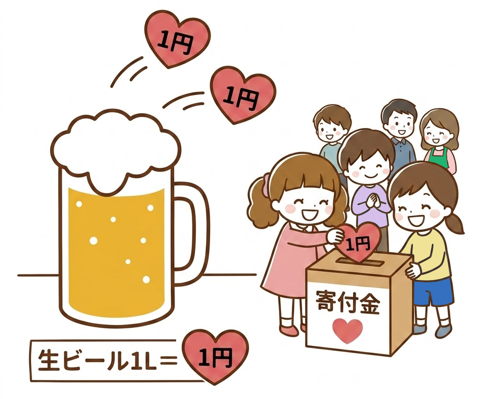

キャンペーン期間中に、参加店舗で提供された『生ビール』1Lにつき1円が株式会社マルト水谷から『子ども食堂』や『子どもの問題解決に取り組む団体』に寄付される取り組みです。昨年度は株式会社マルト水谷から117団体の子ども食堂へ計3,900,615円が寄付されましました。 ハッピーリングチャリティ参加店で飲まれる生ビールが寄付となり子ども食堂に届きます。
※公式サイトでは寄付がどのように子ども達に使われているかご紹介しています。